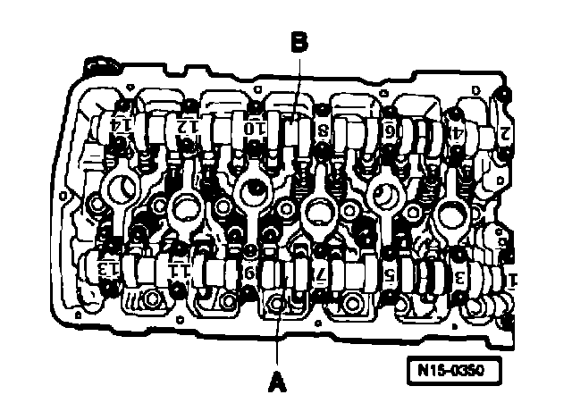
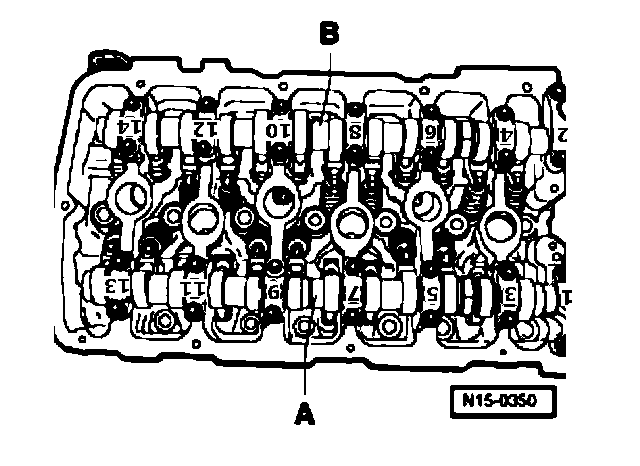

Camshaft Bearing Cap Torque & Sequence
Camshaft Bearing Caps

A - Intake camshaft
Tighten bearing caps 5 and 9 alternately and diagonally to 5 Nm and 1/8 turn (45 )further.
Install bearing caps 1 and 13 and tighten to 5 Nm and 1/8 turn (45°) further.
Install bearing cap 7 and tighten to 5 Nm and 1/8 turn (45°) further.
Install bearing caps 3 and 11 and tighten to 5 Nm and 1/8 turn (45°) further.

B - Exhaust camshaft
Tighten bearing caps 6 and 10 alternately and diagonally to 5 Nm and 1/8 turn (45°) further.
Install bearing caps 2 and 14 and tighten to 5 Nm and 1/8 turn (45°) further.
Install bearing cap 8 and tighten to 5 Nm and 1/8 turn (45°) further.
Install bearing caps 4 and 12 and tighten to 5 Nm and 1/8 turn (45°) further.